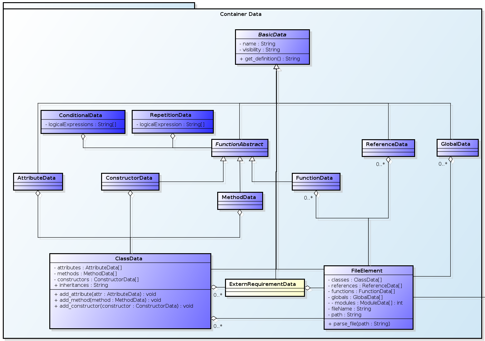

Briefly, the main goal of Kuniri is: parse any kind of language, and generate a common model file with code information. We believe that Kuniri can be a base tool for other tools, like a diagram generator, traceability, code quality, documentation, and so forth. Initially, the main objective of Kuniri was to provide a way to dynamically generate diagrams and traceability based on code. However, the parser proved much more useful for many other kinds of applications; thus, the focus shifted to the parser creation.
Kuniri will inspect the source code, and extract information to generate a final output. This file is a XML file (and other types in the near future), and follows a strong pattern. This feature gives flexibility to other tools read the file and process anything they want.
Additionally, Kuniri was designed to grow to two main directions: support for different languages, and provide ways to select which kind of information to extract from the code.
This section focuses on Kuniri's architecture, our main objective, it is making you comfortable enough to understand the way which our classes are related. We are NOT interested on code details in this section, instead of it, we want to make you comfortable with the project and reduce the learning curve to understand the code. We divided this section based on Kuniri's modules, and at the end, we have a fast discussion about our architecture philosophy.
As the point of view of architecture, our main goal it was to create a generic interface which can be easily added new languages under Kuniri, and converge it to a standardized output. In this sense, we divided kuniri's architecture into three main parts: data container, abstract container, and state machine. The picture below, shows the set of classes responsible for building our data information:
Abstract Container is a set of abstract classes, whose the main objective it is providing a common interface of methods to be overridden by any specific implementation. This interface is responsible for making our parser generic. Firstly, because any kind of language has its specific implementation of those methods. Secondly, because our state machine uses those methods to change their state without knowing anything about specific language (next section we talk about the state machine).